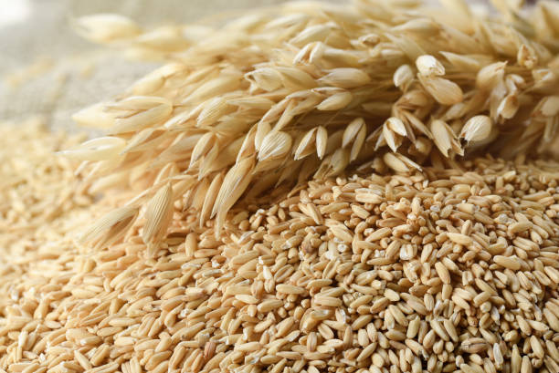

Oatmeal

Oats, oats, oats!
Nothing warms the belly like a good oatmeal with a tasty jam or sugar and cinamon.
You might see recipes out there saying you should use oatmilk to make oatmeal,
but that's just more oats. Best oat meal is just oats, salt and water.
What you need:
- Don't worry about measurments. Grab some oats, what ever you think is enough.
- Put it in a pot, cover the oats in water
- Add as much salt as you think will make it taste good
- Simmer on medium/low-medium heat, it will take about 10-15 minutes
- You can do it quicker but the final product will taste better if you heat it slowly
- Top it with what ever you like, you're done!
Home